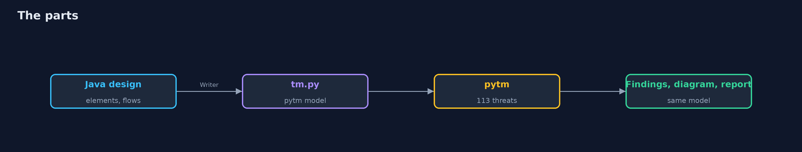
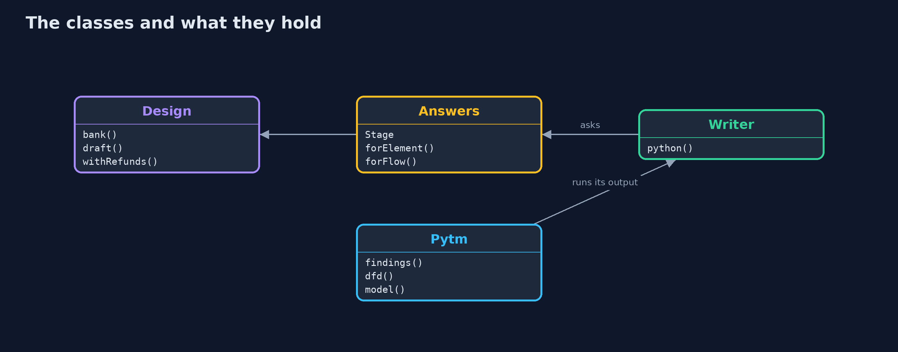
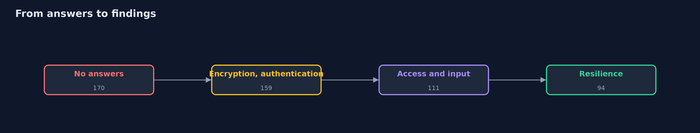
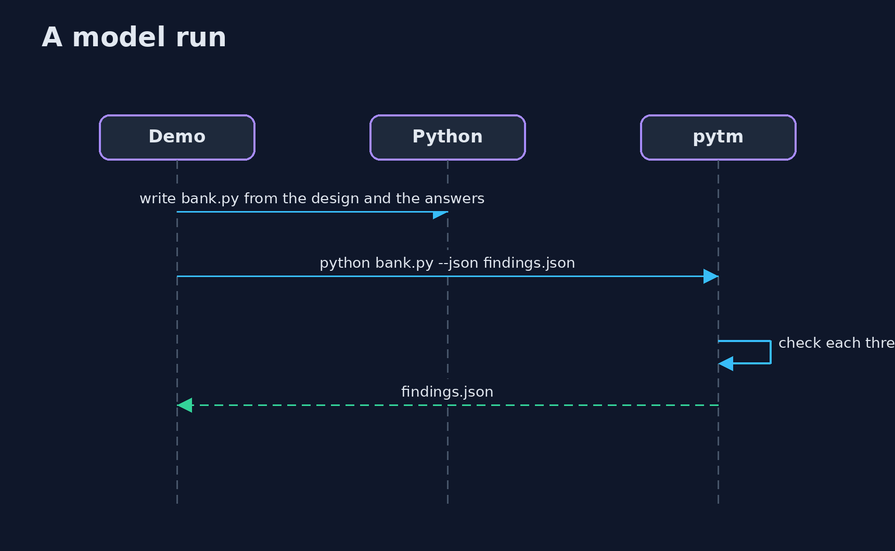

Threat Modeling with pytm
src/main/java/com/jk/explore/security/pytmmodel/
├── Answers.java What the team says about each element and flow: pytm asks about encryption, authentication, access control, validation and resilience, and its rules produce a finding for each threat of its library whose condition the answers do not rule out
├── Design.java The online bank of the plain threat-modeling project, as plain data: who talks to whom, across which boundary, and whether each flow is encrypted, authenticated and authorized
├── Pytm.java The real pytm 1.4, installed with pip into a virtual environment under build/ the first time, and run on a model file
├── PytmDemo.java
└── Writer.java Writes the Python file that pytm reads: the design as pytm objects, plus the answers of a stage
A program writes the bank's data-flow design as a Python model for pytm 1.4, which checks 113 threats from its library against every element and flow: with no answers it finds 170, and four stages of answers (encryption, authentication, access control and input handling, resilience) bring it to 94; the same model draws the diagram with Graphviz and fills a report template; but the findings are a function of the answers, pytm accepts a draft that skips a boundary, holds no decisions, and catches a design change only if the model is changed.
The plain threat-modeling project writes a data-flow model of an online bank, runs STRIDE rules over it and keeps a register of decisions. This one gives the same bank to a real tool, pytm 1.4, "pythonic threat modeling": a Java program writes the design as a Python model, pytm checks the 113 threats of its library against every element and flow, and the findings, a diagram and a report come out of the same model. It needs python3 with pip (pytm is installed into a virtual environment under build/ the first time, which needs a network) and Graphviz (brew install graphviz); the tests are tagged integration: ./gradlew integrationTest.
What it shows:
- The bank, written for pytm. 7 elements, 8 flows and 4 boundaries, 66 lines of Python. A draft with a card vault and a flow from the app that skips a boundary is accepted without a complaint (the plain model check reported 2 problems): pytm judges the answers about each element, not the shape of the picture.
- What pytm finds when nothing is said. 170 findings from 73 different threats (16 Very High, 59 High, 85 Medium), starting from the worst case; the plain STRIDE rules gave 20 candidates.
- Every answer changes the findings. Declaring encryption: 167. Authentication: 159. Access control, least privilege and input handling: 111. Hardening, limits and logging: 94. An answer that is not true makes a finding disappear.
- A diagram and a report. --dfd and Graphviz draw 7 nodes, 8 arrows and 4 trust boundaries; --report fills a template of our own with the 94 findings.
- The bill. A refund flow over plain http takes 94 findings to 99; findings about XML appear in a bank that parses none; pytm keeps no owner, no decision and no review date.
Maps to: OWASP Top 10 (2025) A06 Insecure Design · NIST SSDF PW.1 (design software to meet security requirements) · CAPEC (the source of pytm's threats) · STRIDE.
The idea in everyday terms
A building inspector with a very long checklist who starts by assuming every door is unlocked. Each lock you can honestly show them crosses items off, and a lock you claim but do not have only hides the item.
The scenario
The online bank of the plain threat-modeling project. The demo describes it once, in Java, and asks pytm what could go wrong at each stage of what the team can honestly say about it.
Run
./gradlew run
The demo tells the story in 5 acts, each printing exact numbers that the tests check:
| Act | What it shows |
|---|---|
| 1. The bank, written for pytm | A Java design of 7 elements, 8 flows and 4 boundaries becomes 66 lines of pytm Python; a draft that skips a boundary is accepted. |
| 2. What pytm finds when nothing is said | 170 findings from 73 threats, starting from the worst case. |
| 3. Every answer changes the findings | Four stages of honest answers take 170 findings down to 94. |
| 4. A diagram and a report | The same model draws 7 nodes, 8 arrows and 4 boundaries and fills a report of 94 findings. |
| 5. The bill | A design change is caught only if the model is changed, generic findings need a person, and pytm keeps no decisions. |
Test
./gradlew test
12 tests in DemoRunsTest, PytmTest, WriterTest. The design and the generated Python are tested with no tool. The rest run pytm and Graphviz (./gradlew integrationTest); the first run installs pytm with pip and needs a network.
What the simulation got right, and what it left out
pytm is the real library, installed with pip into a virtual environment; Graphviz is the real dot. The model is written by the program from a Java description of the bank. Findings are sorted before they are printed, so the output is the same on every run.
Technologies and versions
Every version below is pinned in the project's build files and was the latest stable release when the project was built.
| Technology | Version | Used for |
|---|---|---|
| Java | 25 | the language and runtime; a Gradle toolchain finds or downloads the JDK |
| Gradle | 9.8.1 (wrapper) | build and run; nothing to install, the wrapper downloads it |
| tools.jackson.core:jackson-databind | 3.1.5 | library the code uses |
| org.junit.jupiter:junit-jupiter | 6.1.3, set by junit-bom | JUnit 5: the tests (tests only) |
| org.junit.platform:junit-platform-launcher | 6.1.3, set by junit-bom | JUnit platform launcher, which Gradle needs to run the tests (tests only) |
| videokit | repository tool (tools/videokit) |
the narrated video and animation: Piper en_US-amy-medium, speed 0.8, longer pauses (the amy-slow voice) |
Learning Material
| Document | What it is for |
|---|---|
| Problem statement | the situation and what the project must show |
| Prerequisites | what you need to know first |
| Threat Modeling with pytm, explained | the acts in prose |
| Session guide | a one-hour lesson with exercises |
| Animated walkthrough | the acts step by step, narrated |
| Threat model | what is protected, who could harm it, and how, using STRIDE |
| Spec | what this project must be true of |
| Expected output | the golden demo output every test and every port checks against |
The idea in one picture
One design, one model, three outputs.

Where each piece sits
A design, answers, a writer and a runner.

How the data moves
Each stage adds answers and removes findings.

Who calls whom, in order

Video
video/threat-modeling-with-pytm-explained.mp4 (with .m4a audio and .srt subtitles) is built by video/build_video.sh. Rendered media is not committed.
What it costs
- The answers are claims, and a false one hides a finding.
- A generic library of threats gives candidates, many of which do not apply.
- The model is a second copy of the design unless it is generated from the first.
- pytm has no place for decisions, owners and review dates.
- It needs Python and Graphviz, one more toolchain.
When this is too much
A small internal tool with one user and no sensitive data does not need a tool. Use one when a design has several parties and boundaries, or when the model must be rerun at every change.
Where you have already met this
- A
tm.pyfile in a repository. - A data-flow diagram in a design document.
- A STRIDE spreadsheet.
- A list of findings sorted by severity that nobody has read.
Where this sits
This is the tools version of threat-modeling, in the secure-design module. The next project turns the same bank into attack trees and abuse cases: attack-trees-and-abuse-cases-with-threat-dragon.